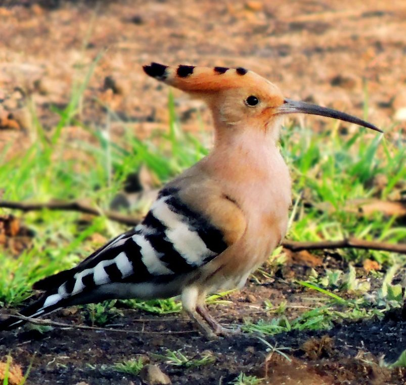

हुदहुदCommon Hoopoe
Upupa epops · Upupidae · BRD-0033

- Scientific name
- Upupa epops Linnaeus, 1758
- Family
- Upupidae
- Hindi
- हुदहुद
- Status here
- native
- IUCN
- LC
When to look कब देखें
Present all year.
हुदहुद / Common Hoopoe
Upupa epops Linnaeus, 1758 — Upupidae
हुदहुद (कॉमन हूपो) — पूर्वी उत्तर प्रदेश के ग्रामीण उद्यानों, खेतों, बागों और खुले मैदानों में पाया जाने वाला एक अत्यंत आकर्षक और आसानी से पहचाने जाने वाला निवासी पक्षी है। इसकी सबसे बड़ी पहचान इसके सिर पर मुकुट के समान पंखों की सुंदर कलगी (fan-shaped erectile crest) है, जिसे यह उत्तेजित होने या जमीन पर उतरते समय खोलता है। इसका शरीर रेतीले-नारंगी (sandy-buff) रंग का होता है, और इसके पंख तथा पूँछ पर काले और सफ़ेद रंग की चौड़ी पट्टियाँ (bold zebra-like bars) होती हैं। यह अपनी लंबी, पतली और नीचे की ओर झुकी हुई चोंच से मिट्टी और गोबर को कुरेदकर हानिकारक कीड़ों और उनके लार्वों को बाहर निकालकर खाता है। इसकी विशिष्ट "हुप-हुप-हुप" की आवाज़ के कारण ही इसका स्थानीय और हिंदी नाम हुदहुद पड़ा है।
Quick Identification त्वरित पहचान
| Feature | Description |
|---|---|
| Size | Medium-sized slender bird (25–32 cm total length); approximately size of a Myna |
| Crest | Large, crown-like fan of black-tipped, sandy-buff feathers; erectile at will |
| Colouration | Sandy-orange head, neck, and breast; black-and-white striped wings and tail |
| Bill | Long, thin, slightly down-curved, and dark; adapted for soil probing |
| Flight | Distinctive undulating, erratic flight resembling a giant butterfly |
| Foraging | Walks actively on the ground, probing lawns and loose soil |
Field tip: Look on lawns and harvested crop fields. Watch for a Myna-sized orange bird walking with a zebra-patterned back. If startled, it will briefly raise its spectacular fan-shaped crest before taking off in a floppy, butterfly-like flight.
Morphology आकारिकी
Biometrics (typical measurements in the northern Indian plains):
| Measurement | Range |
|---|---|
| Total length | 250–320 mm |
| Wing (flattened chord) | 135–155 mm |
| Tail | 95–105 mm |
| Tarsus | 20–24 mm |
| Bill (culmen from base) | 50–65 mm |
| Weight | 45–75 g |
Plumage: The head, neck, mantle, and breast are soft sandy-buff or light cinnamon-orange. The crest feathers are sandy-orange, each tipped with a broad black bar. The lower back, wings, and tail are boldly banded with alternating broad stripes of black and creamy-white. The abdomen is white, with dark streaks on the flanks.
Bare parts: The long, slender, lateral-tapering bill is blackish, fading to pinkish-grey near the base. The irises are dark brown. The short legs and feet are grey-brown, with strong claws suited for walking and scratching.
Vocalisations
Common Hoopoes are highly vocal during the breeding season.
- Breeding Call: A low, hollow, far-carrying trisyllabic song: hoo-poo-poo or hud-hud-hud, repeated rapidly. The call is produced by inflating the air sacs in the throat, which acts as a resonator.
- Alarm / Aggression Call: A harsh, raspy, rolling scold or hissing sound: cherrr or shree, given when nests are threatened.
Ecological Role पारिस्थितिक भूमिका
Terrestrial insectivore and soil bioturbator.
- Subterranean predator: They specialize in hunting underground soil fauna. By probing the ground, they extract grubs and pupae that other birds cannot reach.
- Soil aerator: Their continuous probing and scratching aerates the topsoil, helping in seedbed preparation in orchards.
- Secondary cavity user: Though they do not excavate cavities themselves, their nesting habits rely on natural hollows, encouraging the preservation of old hollow-bearing trees.
Life Cycle / Phenology जीवन चक्र
- Breeding season: February to June, peaking before the arrival of the monsoon.
- Nesting: They nest in tree cavities (especially old mango or peepal trees), wall crevices in old rural buildings, or piles of stones.
- Sanitation defense: The female and nestlings produce a foul-smelling liquid from their uropygial gland to deter predators. The nest is notoriously smelly.
- Clutch size: 5 to 8 olive-green or cream-coloured eggs.
- Incubation: 15–18 days, performed solely by the female, who is fed by the male during this period.
- Fledging: Both parents feed the chicks with large insect larvae. Chicks fledge and leave the nest in 24–28 days.
Host Plants or Prey आहार
Primary food items:
- Insects: Larvae and pupae of beetles, particularly the destructive White Grub (Holotrichia consanguinea), crickets, mole crickets, and cutworms.
- Annelids: Common Earthworms (Metaphire posthuma).
- Other invertebrates: Small centipedes and spiders. They beat larger prey against the ground to break their hard limbs before swallowing.
Predators / Natural Enemies शत्रु
- Raptors: Shikras (Accipiter badius) and Black Kites prey on adults and fledglings.
- Carnivores: Feral cats and mongooses (Herpestes edwardsii) hunt birds foraging on the ground.
- Reptiles: Rat Snakes (Ptyas mucosa) raid nest cavities in low tree trunks or stone walls.
Agricultural / Human Relevance कृषि प्रासंगिकता
Farmers' active ally. Hoopoes are highly beneficial to agriculture in Basti. They consume large numbers of root-damaging white grubs, agricultural beetles, and cutworms directly from fields.
Historically, the Hoopoe holds significant cultural status:
- In Islamic tradition, the Hoopoe (Hudhud) is celebrated as a messenger bird to King Solomon in the Quran (Surah Al-Naml).
- In Hindu and Sanskrit contexts, it represents wisdom and cleanliness, known as Chitraratha (having a painted chariot) due to its striking patterns.
Expected Locally स्थानीय रूप से अपेक्षित
Not a field record. Written from published accounts for eastern Uttar Pradesh. No confirmed local sighting yet — if you have seen it, that is what the atlas needs.
अभी तक स्थानीय पुष्टि नहीं। यह विवरण प्रकाशित स्रोतों से है, किसी अवलोकन से नहीं।
Commonly observed throughout the orchards of Basti and Ayodhya. They are frequently seen foraging on the grassy lawns of schools, government offices, and the margins of mango (Mangifera indica) orchards. They are remarkably bold, foraging just a few meters away from village houses, often nesting in the holes of old brick walls.
Distribution वितरण
Global range: Widespread across Europe, Asia, and North Africa.
In India: Found throughout the plains and lower Himalayas up to 2,000 meters.
In Uttar Pradesh: A common resident state-wide, with local winter influxes of the European nominate subspecies.
In Basti district / eastern UP: Observed year-round in village groves, farms, and school lawns.
Research Questions शोध प्रश्न
Anyone can investigate these | कोई भी इन प्रश्नों की जाँच कर सकता है
- How many probes does a Hoopoe make per minute in damp lawn soil vs. dry agricultural soil? — Count probing frequency in different ground conditions.
- Do Hoopoes prefer nesting in old brick walls over natural tree cavities in Basti villages? — Survey and record active nest sites in rural areas.
- Does the chemical defense secretion of nesting females vary in smell or intensity as the chicks grow? — Observe nests and note predator deterrence.
- How does the presence of grazing livestock affect the foraging efficiency of Hoopoes? / क्या चरने वाले मवेशियों की उपस्थिति हुदहुद की शिकार खोजने की दक्षता को प्रभावित करती है? — Observe foraging rates near cows/buffalos.
- How does the local population size change in Basti during the winter months due to migratory arrivals? / सर्दियों के महीनों में प्रवासी हुदहुद के आने से बस्ती में इनकी स्थानीय आबादी में क्या बदलाव आता है? — Conduct winter vs. summer counts.
Similar Species मिलती-जुलती प्रजातियाँ
| Species | Key Difference | हिंदी |
|---|---|---|
| Eurasian Hoopoe (Upupa epops epops) | Nominate winter visitor; slightly larger; paler plumage; white bands on crest feathers are more prominent | यूरेशियन हुदहुद — सर्दियों का प्रवासी, हल्का रंग |
| Common Myna (Acridotheres tristis) | Similar size on the ground; lacks crest and long curved bill; uniform brown with yellow eye patch | मैना — भूरा शरीर, पीली आँख का टुकड़ा, छोटी चोंच |
| Indian Roller (Coracias benghalensis) | Shorter heavy bill; brilliant blue wings; lack of crest and black-white zebra stripes on body | नीलकंठ — नीले पंख, भारी चोंच, सिर पर कलगी नहीं |
Field rule: The combination of a long decurved bill, sandy-buff body, bold black-and-white wings, and a spectacular erectile crest separates the Common Hoopoe from all other Indian birds.
Taxonomy & Classification वर्गीकरण
Original description. Carl Linnaeus described the Common Hoopoe as Upupa epops in 1758 in his work Systema Naturae, 10th edition (Vol. 1, p. 117). The type locality was Sweden. The genus name Upupa is onomatopoeic, representing the bird's call. The specific name epops is the ancient Greek name for the hoopoe.
Subspecies. Nine subspecies are recognized globally. The breeding resident subspecies in Uttar Pradesh is:
| Subspecies | Authority | Range | Notes |
|---|---|---|---|
| U. e. orientalis | Cabanis, 1859 | Indian Subcontinent | UP resident subspecies; nominate form U. e. epops also occurs as a winter migrant |
Family and order placement. Placed in the order Bucerotiformes (which also includes hornbills), family Upupidae (of which it is the sole surviving genus).
Phylogenetic notes. Upupidae is a ancient lineage. The African Hoopoe (Upupa africana) was recently split from Upupa epops.
IUCN status rationale. Listed as Least Concern (LC) due to its extremely large range, high adaptability to farmland, and overall stable global population.
Photo Gallery फोटो गैलरी
References संदर्भ
- Linnaeus, C. (1758). Systema Naturae per regna tria naturae. Editio Decima. Laurentii Salvii, Holmiae, p. 117. [original description]
- Ali, S. & Ripley, S. D. (1999). Handbook of the Birds of India and Pakistan. Vol. 4. Oxford University Press, New Delhi.
- Grimmett, R., Inskipp, C. & Inskipp, T. (2011). Birds of the Indian Subcontinent. 2nd ed. Christopher Helm, London.
- Kristin, S. (2001). Family Upupidae (Hoopoe). In del Hoyo, J., Elliott, A. & Sargatal, J. (eds). Handbook of the Birds of the World. Vol. 6. Lynx Edicions, Barcelona.
- BirdLife International (2024). Upupa epops. IUCN Red List of Threatened Species. Ver. 2024.
- GBIF Occurrence Data — Upupa epops, Uttar Pradesh (2010–2025).
Source file: species/fauna/birds/common_hoopoe.md